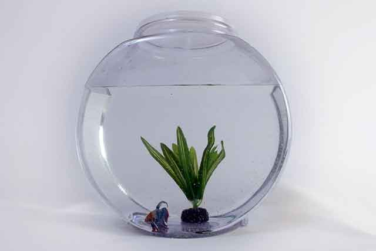
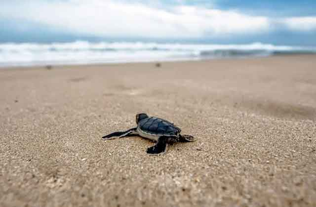
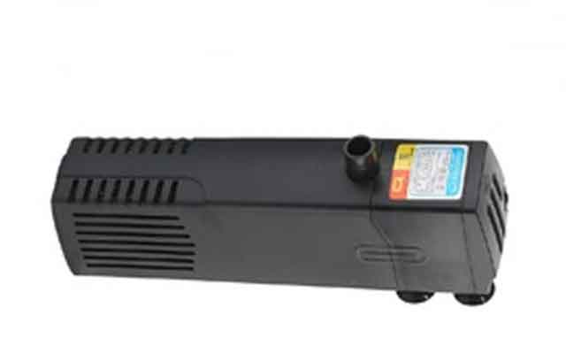
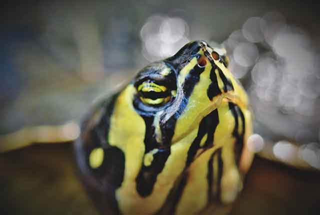
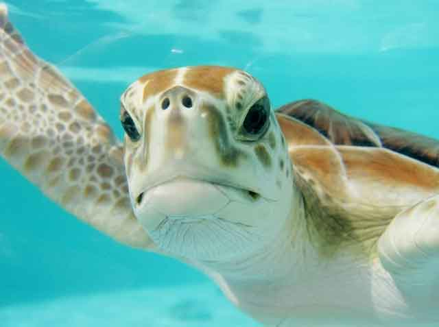

반려동물로 거북이를 선택했다면, 주의해야 할 점!
반려동물 선택의 폭이 아주 넓어졌습니다. 개와 고양이가 전부였던 과거와는 달리 관상용 물고기부터 파충류, 가정에서 키우기 좋게 길든 야생동물부터 정말 다양해졌죠. 그 안에 거북이도 빠지지 않습니다. 다만, 거북이는 키우기 시작할 때 '긴 수명'을 고려하지 않을 수 없습니다. 즉, 처음 입양할 때는 잘 키울 수 있을 거란 막연한 생각으로 시작하지만, 막상 키우기 시작하면 문제점이 하나씩 나타나기 때문입니다. 따라서 반려동물로 거북이를 선택했다면, 무조건 시작하기보다는 심사숙고해 결정하는 것이 중요합니다. 거북이 키우기 시작할 때, 주의해야 할 점! 하나씩 알아보겠습니다.
"적절한 어항 크기"
거북이를 입양할 때 크기가 아닌 다 자랐을 때의 크기까지 고려해야 합니다. 생각보다 크기가 커져서 집에 있는 어항으로는 감당이 안 될 수도 있습니다. 만약, 다 자란 거북이가 30cm가 된다면 기존에 갖고 있던 40cm 어항으로는 턱도 없는 일이 되겠죠. 따라서 처음부터 성체가 된 거북이 크기를 예측하고, 환경에 맞는 어항을 선택할 수 있어야겠죠.
"거북이 성향 파악"
거북이도 품종마다 다른 성격을 갖고 있습니다. 온순한 성격을 가진 거북이가 있는가 하면 보이는 모습과는 달리 거친 면을 가진 거북이도 있습니다. 게다가 성격이 서로 다른 거북이를 합사했을 때 둘 중 하나는 다치거나 죽는 상황이 발생할 수 있습니다. 어렵게 입양한 거북이를 얼마 키워보지도 못하고 잃는 상황을 만들지 않기 위해서는 처음부터 거북이 성향을 제대로 파악하는 것이 좋습니다.
"여과기는 선택 아닌 필수"
거북이는 물을 빠르게 더럽힙니다. 그래서 빠른 수질 악화로 제때 물을 갈아주지 않거나 여과기가 없다면, 집안 전체가 온통 악취로 가득할 수 있습니다. 따라서 여과기를 설치해 쾌적한 환경을 만들어 주는 게 거북이에게나 사람에게나 모두 좋습니다. 단, 거북이는 수생, 반수생에 따라 육지가 필요할 수 있습니다. 이때 수생, 반수생 그리고 어항의 조건 등을 파악해 여과기를 선택할 필요가 있습니다.
"반수생, 적절한 육지 용품이 중요"
반려동물로 거북이를 택한 분이라면 대부분 반수생 거북이로 시작할 가능성이 큽니다. 수생이나 육지 거북은 사육이 어렵기 때문이죠. 그렇다고 반수생 거북이가 마냥 쉬운 것만은 아닙니다. 육지로 올라갈 공간을 만들어 줘야 하고, 육지로 올라갈 수 있는 경사면이 존재해야 합니다. 반수생 거북이에겐 일광욕은 중요한 부분 중 하나로 일광욕 없이는 질병에 걸려 키우기 힘들 수 있습니다.
기본적인 조건 외에 다행히 먹이 걱정은 할 필요가 없습니다. 거북이는 잡식성 동물로 웬만한 거북이 사료는 다 잘 먹기 때문이죠. 가끔 특식을 챙겨주는 것도 좋습니다. 가정에서 키우는 거북이의 수명은 15~25년 정도 됩니다. 적지 않은 세월이죠. 긴 세월을 함께 할 수 있도록 처음부터 잘 갖춰진 준비자세로 함께 하는 것이 좋습니다.
[출처] 반려동물로 거북이를 선택했다면, 주의해야 할 점! ｜ 작성자 우리집 사고뭉치